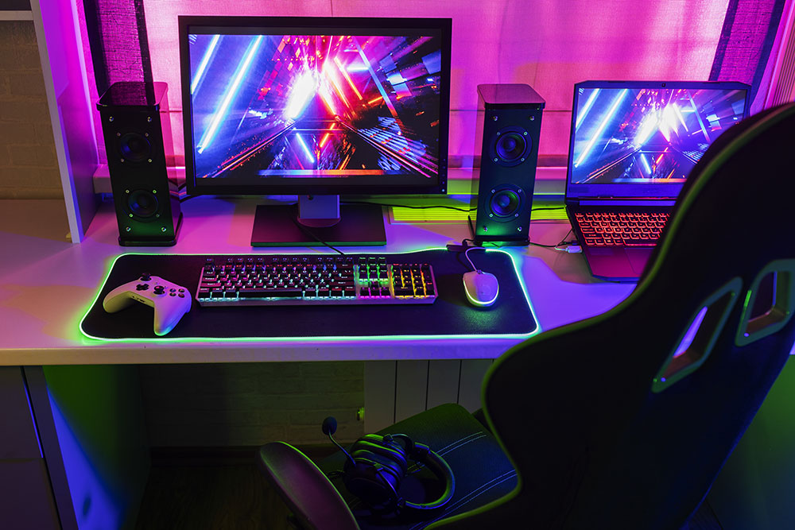
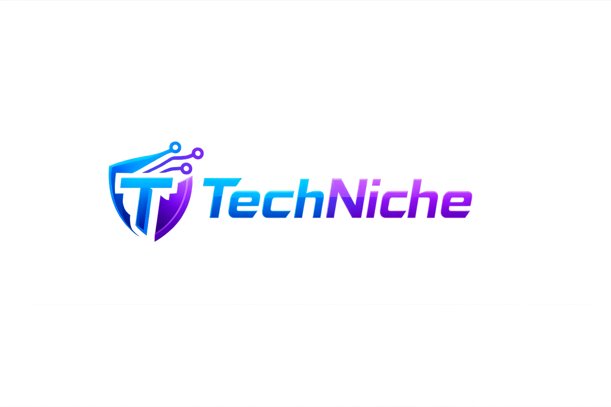

Estilo Fotográfico
La marca utiliza imágenes con iluminación LED, ambientes gamer y escenarios tecnológicos modernos.



La tecnología es nuestra pasión, por eso asesorarte es nuestra misión.
TechNiche nace con el propósito de asesorar y acompañar a personas y empresas en el mundo tecnológico. Nos especializamos en hardware, equipos gamer y soluciones digitales adaptadas a cada necesidad.
Nuestra misión es brindar recomendaciones confiables y actualizadas, ofreciendo siempre una experiencia moderna, juvenil y cercana.
El logotipo de TechNiche representa innovación, seguridad y tecnología moderna.

El símbolo integra un escudo tecnológico con una tipografía futurista, representando protección, confianza y especialización en tecnología.
Los tonos azul y morado reflejan innovación, energía gamer y modernidad.
El logotipo debe respetar siempre sus proporciones y colores originales.
Los colores de TechNiche reflejan innovación, energía y modernidad.
Azul eléctrico
#0D6EFD
Morado gamer
#6F42C1
Gris claro
#F8F9FA
Negro tecnológico
#121212
La tipografía refuerza el estilo moderno y tecnológico de la marca.
Utilizada para títulos y encabezados principales.
Utilizada para textos descriptivos y contenido general.
Los íconos de TechNiche siguen un estilo minimalista, moderno y tecnológico.
Hardware
Gaming
Seguridad
La marca utiliza imágenes con iluminación LED, ambientes gamer y escenarios tecnológicos modernos.

La identidad visual de TechNiche se adapta a diferentes entornos digitales y físicos.
Publicaciones con fondos oscuros, luces LED azul y morado, y mensajes tecnológicos.
Diseño moderno, minimalista y responsive, con predominancia de azul y morado.
Tarjetas de presentación con fondo oscuro y logotipo en versión oficial.
Banners promocionales dirigidos a gamers y empresas tecnológicas.
TechNiche adopta un estilo de comunicación dinámico, gamer y juvenil.
✔ Correcto: “Potencia tu setup al siguiente nivel 🚀”
✔ Correcto: “¿Listo para dominar el juego?”
✖ Incorrecto: “Adquiera nuestros productos tecnológicos con eficiencia corporativa.”